Chapter 4. Generalizing Linear Models#
import os
import warnings
import arviz as az
import matplotlib.pyplot as plt
import pandas as pd
import seaborn as sns
import jax.numpy as jnp
from jax import random, local_device_count
from jax import nn as jnn
import numpyro
import numpyro.distributions as dist
from numpyro.infer import MCMC, NUTS
seed=1234
if "SVG" in os.environ:
%config InlineBackend.figure_formats = ["svg"]
warnings.formatwarning = lambda message, category, *args, **kwargs: "{}: {}\n".format(
category.__name__, message
)
az.style.use("arviz-darkgrid")
numpyro.set_platform("cpu") # or "gpu", "tpu" depending on system
numpyro.set_host_device_count(local_device_count())
/home/runner/work/bap-numpyro/bap-numpyro/.venv/lib/python3.13/site-packages/tqdm/auto.py:21: TqdmWarning: IProgress not found. Please update jupyter and ipywidgets. See https://ipywidgets.readthedocs.io/en/stable/user_install.html
from .autonotebook import tqdm as notebook_tqdm
# import pymc3 as pm
# import numpy as np
# import pandas as pd
# import theano.tensor as tt
# import seaborn as sns
# import scipy.stats as stats
# from scipy.special import expit as logistic
# import matplotlib.pyplot as plt
# import arviz as az
# az.style.use('arviz-darkgrid')
Logistic regression#
z = jnp.linspace(-8, 8)
plt.plot(z, 1 / (1 + jnp.exp(-z)))
plt.xlabel('z')
plt.ylabel('logistic(z)')
Text(0, 0.5, 'logistic(z)')
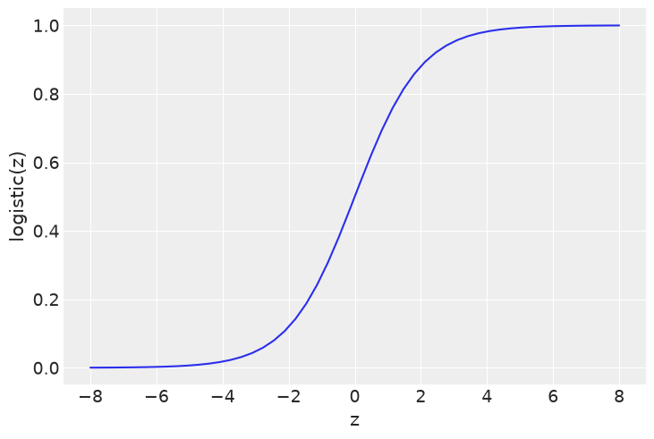
The iris dataset#
iris = pd.read_csv('../data/iris.csv')
iris.head()
| sepal_length | sepal_width | petal_length | petal_width | species | |
|---|---|---|---|---|---|
| 0 | 5.1 | 3.5 | 1.4 | 0.2 | setosa |
| 1 | 4.9 | 3.0 | 1.4 | 0.2 | setosa |
| 2 | 4.7 | 3.2 | 1.3 | 0.2 | setosa |
| 3 | 4.6 | 3.1 | 1.5 | 0.2 | setosa |
| 4 | 5.0 | 3.6 | 1.4 | 0.2 | setosa |
sns.stripplot(x="species", y="sepal_length", data=iris, jitter=True)
<Axes: xlabel='species', ylabel='sepal_length'>
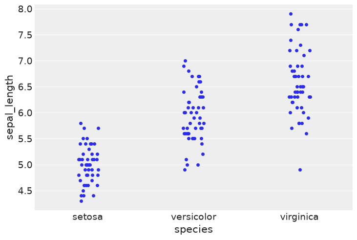
sns.pairplot(iris, hue='species', diag_kind='kde')
UserWarning: The figure layout has changed to tight
<seaborn.axisgrid.PairGrid at 0x7f477bb06ba0>
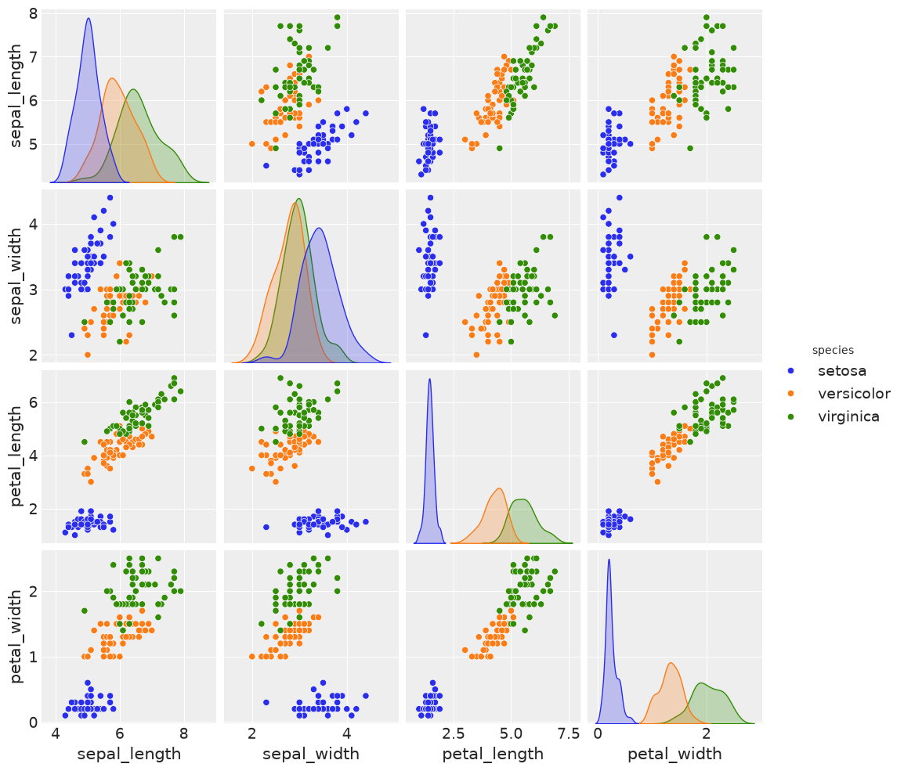
The logistic model applied to the iris dataset#
df = iris.query("species == ('setosa', 'versicolor')")
y_0 = pd.Categorical(df['species']).codes
x_n = 'sepal_length'
x_0 = df[x_n].values
x_c = x_0 - x_0.mean()
def model(obs=None):
α = numpyro.sample('α', dist.Normal(loc=0, scale=10))
β = numpyro.sample('β', dist.Normal(loc=0, scale=1))
ϵ = numpyro.sample('ϵ', dist.HalfCauchy(scale=5))
μ = α + jnp.dot(x_c, β)
θ = numpyro.deterministic('θ', jnn.sigmoid(μ))
bd = numpyro.deterministic('bd', -α/β)
yl = numpyro.sample('yl', dist.Bernoulli(probs=θ), obs=obs)
kernel = NUTS(model)
mcmc = MCMC(kernel, num_warmup=5000, num_samples=5000, num_chains=4, chain_method='sequential')
mcmc.run(random.PRNGKey(seed), obs=y_0)
varnames = ['α', 'β', 'bd']
az.summary(mcmc, varnames)
| mean | sd | hdi_3% | hdi_97% | mcse_mean | mcse_sd | ess_bulk | ess_tail | r_hat | |
|---|---|---|---|---|---|---|---|---|---|
| α | 0.135 | 0.270 | -0.374 | 0.643 | 0.002 | 0.002 | 16480.0 | 13130.0 | 1.0 |
| β | 3.256 | 0.534 | 2.265 | 4.265 | 0.004 | 0.004 | 17220.0 | 12926.0 | 1.0 |
| bd | -0.040 | 0.084 | -0.202 | 0.116 | 0.001 | 0.001 | 17156.0 | 14870.0 | 1.0 |
# az.plot_trace(mcmc, compact=False)
jnp.squeeze(dist.Normal(y_0, 0.02).sample(random.PRNGKey(0), (1,)), axis=0).shape, x_c.shape
((100,), (100,))
theta = mcmc.get_samples()['θ'].mean(axis=0)
idx = jnp.argsort(x_c)
plt.plot(x_c[idx], theta[idx], color='C2', lw=3)
plt.vlines(mcmc.get_samples()['bd'].mean(), 0, 1, color='k')
bd_hdi = az.hdi(mcmc.get_samples()['bd'].copy())['x'].values
plt.fill_betweenx([0, 1], bd_hdi[0], bd_hdi[1], color='k', alpha=0.5)
plt.scatter(x_c, jnp.squeeze(dist.Normal(y_0, 0.02).sample(random.PRNGKey(0), (1,)), axis=0),
marker='.', color=[f'C{x}' for x in y_0])
az.plot_hdi(x_c, mcmc.get_samples()['θ'], color='C2')
plt.xlabel(x_n)
plt.ylabel('θ', rotation=0)
# use original scale for xticks
locs, _ = plt.xticks()
plt.xticks(locs, jnp.round(locs + x_0.mean(), 1))
FutureWarning: hdi currently interprets 2d data as (draw, shape) but this will change in a future release to (chain, draw) for coherence with other functions
([<matplotlib.axis.XTick at 0x7f477842afd0>,
<matplotlib.axis.XTick at 0x7f47617c1bd0>,
<matplotlib.axis.XTick at 0x7f47617c2350>,
<matplotlib.axis.XTick at 0x7f47617c2ad0>,
<matplotlib.axis.XTick at 0x7f47617c3250>,
<matplotlib.axis.XTick at 0x7f47617c39d0>,
<matplotlib.axis.XTick at 0x7f47613f4190>,
<matplotlib.axis.XTick at 0x7f47613f4910>],
[Text(-1.5, 0, '4.0'),
Text(-1.0, 0, '4.5'),
Text(-0.5, 0, '5.0'),
Text(0.0, 0, '5.5'),
Text(0.5, 0, '6.0'),
Text(1.0, 0, '6.5'),
Text(1.5, 0, '7.0'),
Text(2.0, 0, '7.5')])
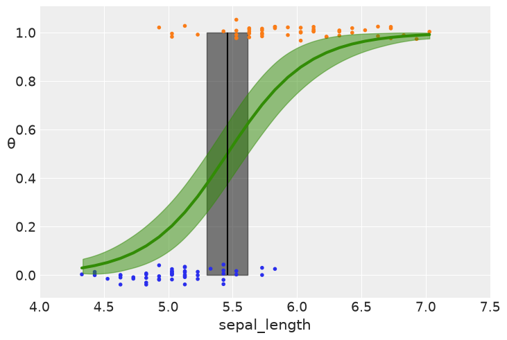
Multiple logistic regression#
df = iris.query("species == ('setosa', 'versicolor')")
y_1 = pd.Categorical(df['species']).codes
x_n = ['sepal_length', 'sepal_width']
x_1 = df[x_n].values
def model(obs=None):
α = numpyro.sample('α', dist.Normal(loc=0, scale=10))
β = numpyro.sample('β', dist.Normal(loc=0, scale=2), sample_shape=(len(x_n),))
μ = α + jnp.dot(x_1, β)
θ = numpyro.deterministic('θ', 1 / (1 + jnp.exp(-μ)))
bd = numpyro.deterministic('bd', -α/β[1] - β[0]/β[1] * x_1[:,0])
yl = numpyro.sample('yl', dist.Bernoulli(probs=θ), obs=obs)
kernel = NUTS(model)
mcmc2 = MCMC(kernel, num_warmup=5000, num_samples=5000, num_chains=2, chain_method='sequential')
mcmc2.run(random.PRNGKey(seed), obs=y_1)
varnames = ['α', 'β']
az.plot_forest(mcmc2, var_names=varnames);
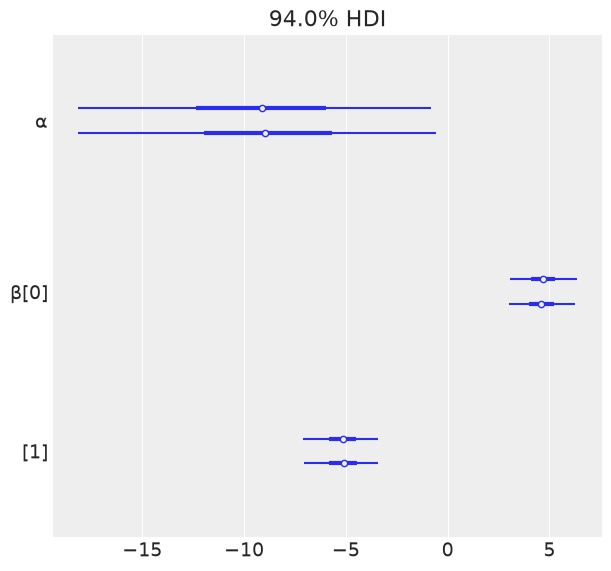
idx = jnp.argsort(x_1[:,0])
bd = mcmc2.get_samples()['bd'].mean(0)[idx]
plt.scatter(x_1[:,0], x_1[:,1], c=[f'C{x}' for x in y_0])
plt.plot(x_1[:,0][idx], bd, color='k');
az.plot_hdi(x_1[:,0], mcmc2.get_samples()['bd'], color='k')
plt.xlabel(x_n[0])
plt.ylabel(x_n[1])
FutureWarning: hdi currently interprets 2d data as (draw, shape) but this will change in a future release to (chain, draw) for coherence with other functions
Text(0, 0.5, 'sepal_width')
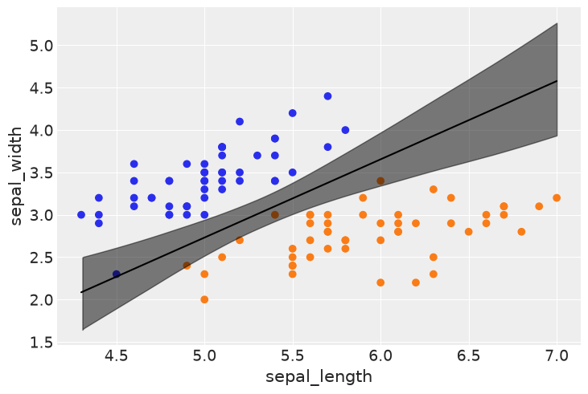
Interpreting the coefficients of a logistic regression#
probability = jnp.linspace(0.01, 1, 100)
odds = probability / (1 - probability)
_, ax1 = plt.subplots()
ax2 = ax1.twinx()
ax1.plot(probability, odds, 'C0')
ax2.plot(probability, jnp.log(odds), 'C1')
ax1.set_xlabel('probability')
ax1.set_ylabel('odds', color='C0')
ax2.set_ylabel('log-odds', color='C1')
ax1.grid(False)
ax2.grid(False)
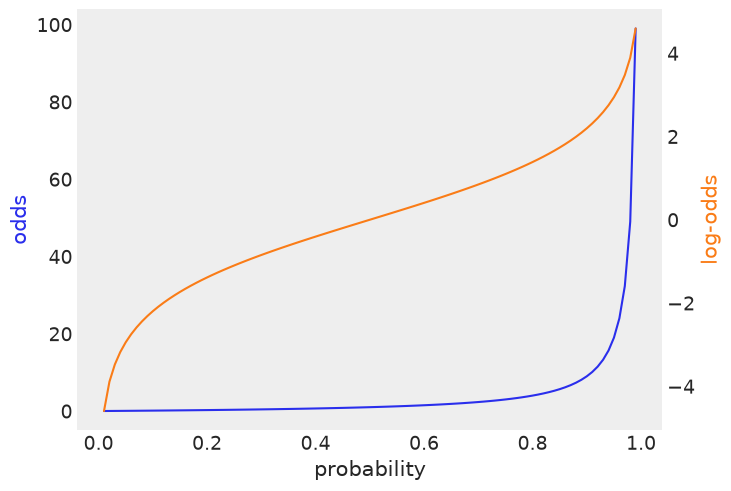
df = az.summary(mcmc2, var_names=varnames)
df
| mean | sd | hdi_3% | hdi_97% | mcse_mean | mcse_sd | ess_bulk | ess_tail | r_hat | |
|---|---|---|---|---|---|---|---|---|---|
| α | -9.100 | 4.678 | -18.108 | -0.609 | 0.086 | 0.063 | 3000.0 | 3364.0 | 1.0 |
| β[0] | 4.655 | 0.884 | 3.010 | 6.287 | 0.017 | 0.012 | 2700.0 | 3356.0 | 1.0 |
| β[1] | -5.173 | 0.980 | -7.067 | -3.396 | 0.016 | 0.011 | 3853.0 | 4471.0 | 1.0 |
from jax.scipy.special import expit as logistic
x_1 = 4.5 # sepal_length
x_2 = 3 # sepal_width
log_odds_versicolor_i = (df['mean'] * [1, x_1, x_2]).sum()
probability_versicolor_i = logistic(log_odds_versicolor_i)
log_odds_versicolor_f = (df['mean'] * [1, x_1 + 1, x_2]).sum()
probability_versicolor_f = logistic(log_odds_versicolor_f)
log_odds_versicolor_f - log_odds_versicolor_i, probability_versicolor_f - probability_versicolor_i
(np.float64(4.655000000000003), Array(0.7029949, dtype=float32))
Dealing with unbalanced classes#
df = iris.query("species == ('setosa', 'versicolor')")
df = df[45:]
y_3 = pd.Categorical(df['species']).codes
x_n = ['sepal_length', 'sepal_width']
x_3 = df[x_n].values
def model(obs=None):
α = numpyro.sample('α', dist.Normal(loc=0, scale=10))
β = numpyro.sample('β', dist.Normal(loc=0, scale=2), sample_shape=(len(x_n),))
μ = α + jnp.dot(x_3, β)
θ = numpyro.deterministic('θ', 1 / (1 + jnp.exp(-μ)))
bd = numpyro.deterministic('bd', -α/β[1] - β[0]/β[1] * x_3[:,0])
yl = numpyro.sample('yl', dist.Bernoulli(probs=θ), obs=obs)
kernel = NUTS(model)
mcmc3 = MCMC(kernel, num_warmup=500, num_samples=1000, num_chains=2, chain_method='sequential')
mcmc3.run(random.PRNGKey(seed), obs=y_3)
az.plot_trace(mcmc3, varnames);
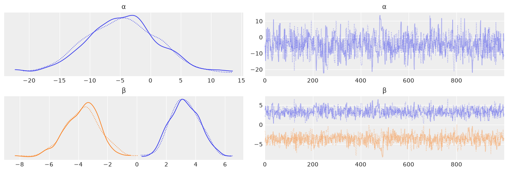
idx = jnp.argsort(x_3[:,0])
bd = mcmc3.get_samples()['bd'].mean(0)[idx]
plt.scatter(x_3[:,0], x_3[:,1], c= [f'C{x}' for x in y_3])
plt.plot(x_3[:,0][idx], bd, color='k')
az.plot_hdi(x_3[:,0], mcmc3.get_samples()['bd'], color='k')
plt.xlabel(x_n[0])
plt.ylabel(x_n[1])
FutureWarning: hdi currently interprets 2d data as (draw, shape) but this will change in a future release to (chain, draw) for coherence with other functions
Text(0, 0.5, 'sepal_width')
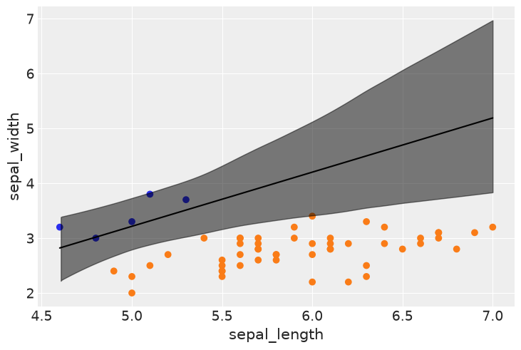
Softmax regression#
iris = sns.load_dataset('iris')
y_s = pd.Categorical(iris['species']).codes
x_n = iris.columns[:-1]
x_s = iris[x_n].values
x_s = (x_s - x_s.mean(axis=0)) / x_s.std(axis=0)
def model(obs=None):
α = numpyro.sample('α', dist.Normal(loc=0, scale=5), sample_shape=(3,))
β = numpyro.sample('β', dist.Normal(loc=0, scale=5), sample_shape=(4,3))
μ = numpyro.deterministic('μ', α + jnp.dot(x_s, β))
θ = jnn.softmax(μ)
yl = numpyro.sample('yl', dist.Categorical(probs=θ), obs=obs)
kernel = NUTS(model)
mcmc4 = MCMC(kernel, num_warmup=500, num_samples=1500, num_chains=2, chain_method='sequential')
mcmc4.run(random.PRNGKey(seed), obs=y_s)
az.plot_forest(mcmc4, var_names=['α', 'β']);
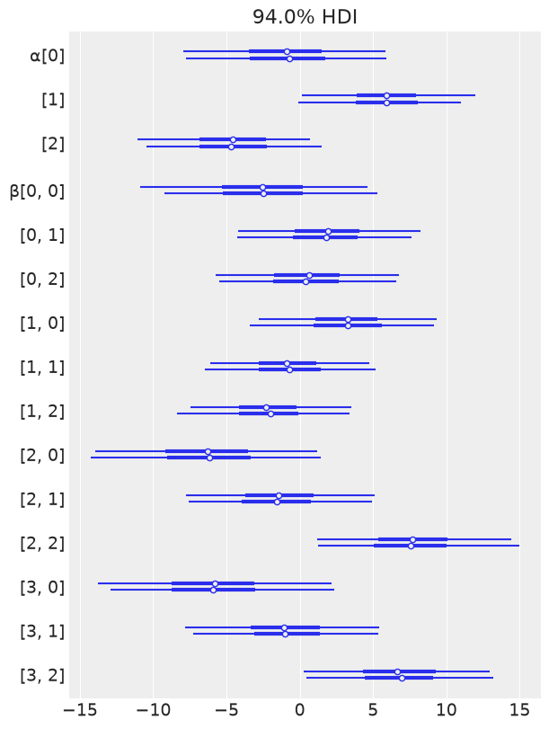
data_pred = mcmc4.get_samples()['μ'].mean(0)
y_pred = jnp.asarray([jnp.exp(point) / jnp.sum(jnp.exp(point), axis=0) for point in data_pred])
f'{jnp.sum(y_s == jnp.argmax(y_pred, axis=1)) / len(y_s):.2f}'
'0.98'
def model(obs=None):
α = numpyro.sample('α', dist.Normal(loc=0, scale=2), sample_shape=(2,))
β = numpyro.sample('β', dist.Normal(loc=0, scale=2), sample_shape=(4,2))
α_f = jnp.concatenate(jnp.array([jnp.zeros((2)), α]))
β_f = jnp.concatenate(jnp.array([jnp.zeros((4,2)), β]), axis=1)
μ = α_f + jnp.dot(x_s, β_f)
θ = jnn.softmax(μ)
yl = numpyro.sample('yl', dist.Categorical(probs=θ), obs=obs)
kernel = NUTS(model)
mcmc5 = MCMC(kernel, num_warmup=500, num_samples=500, num_chains=2, chain_method='sequential')
mcmc5.run(random.PRNGKey(seed), obs=y_s)
Discriminative and generative models#
def model(obs=None):
μ = numpyro.sample('μ', dist.Normal(loc=0, scale=10), sample_shape=(2,))
σ = numpyro.sample('σ', dist.HalfNormal(scale=10))
setosa = numpyro.sample('setosa', dist.Normal(loc=μ[0], scale=σ), obs=obs)
versicolor = numpyro.sample('versicolor', dist.Normal(loc=μ[1], scale=σ), obs=obs)
bd = numpyro.deterministic('bd', (μ[0] + μ[1]) / 2)
kernel = NUTS(model)
mcmc6 = MCMC(kernel, num_warmup=500, num_samples=500, num_chains=2, chain_method='sequential')
mcmc6.run(random.PRNGKey(seed), obs=x_0[:50])
# dist.Normal(y_0, 0.02).sample(random.PRNGKey(1), (len(x_0),)).copy()
plt.axvline(mcmc6.get_samples()['bd'].mean(), ymax=1, color='C1')
bd_hdi = az.hdi(mcmc6.get_samples()['bd'].copy())['x'].values
plt.fill_betweenx([0, 1], bd_hdi[0], bd_hdi[1], color='C1', alpha=0.5)
plt.plot(x_0, dist.Normal(y_0, 0.02).sample(random.PRNGKey(1)),'.', color='k') # np.random.normal(y_0, 0.02)
plt.ylabel('θ', rotation=0)
plt.xlabel('sepal_length')
Text(0.5, 0, 'sepal_length')
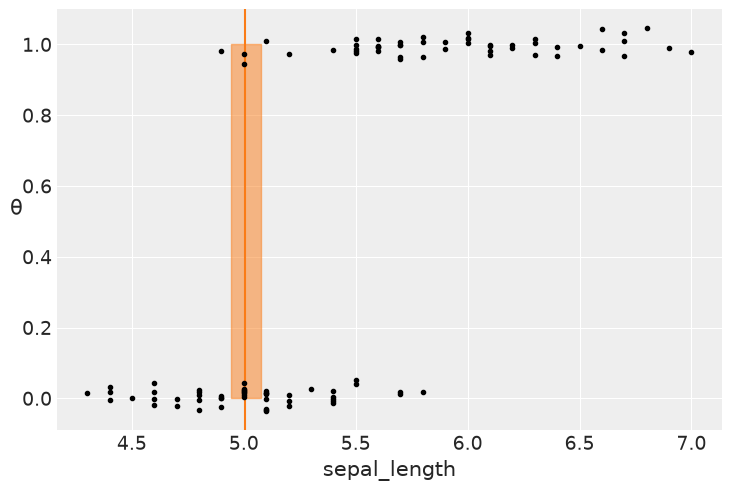
az.summary(mcmc6)
| mean | sd | hdi_3% | hdi_97% | mcse_mean | mcse_sd | ess_bulk | ess_tail | r_hat | |
|---|---|---|---|---|---|---|---|---|---|
| bd | 5.004 | 0.035 | 4.945 | 5.078 | 0.001 | 0.001 | 1044.0 | 723.0 | 1.0 |
| μ[0] | 5.004 | 0.049 | 4.917 | 5.103 | 0.001 | 0.002 | 1200.0 | 650.0 | 1.0 |
| μ[1] | 5.003 | 0.050 | 4.907 | 5.096 | 0.002 | 0.002 | 1021.0 | 799.0 | 1.0 |
| σ | 0.358 | 0.026 | 0.315 | 0.410 | 0.001 | 0.001 | 888.0 | 712.0 | 1.0 |
The Poisson distribution#
mu_params = [0.5, 1.5, 3, 8]
x = jnp.arange(0, max(mu_params) * 3)
for mu in mu_params:
y = jnp.exp(dist.Poisson(rate=mu).log_prob(x)) # PMF - discrete, PDF - continous
# y = stats.poisson(mu).pmf(x)
plt.plot(x, y, 'o-', label=f'μ = {mu:3.1f}')
plt.legend()
plt.xlabel('x')
plt.ylabel('f(x)')
Text(0, 0.5, 'f(x)')
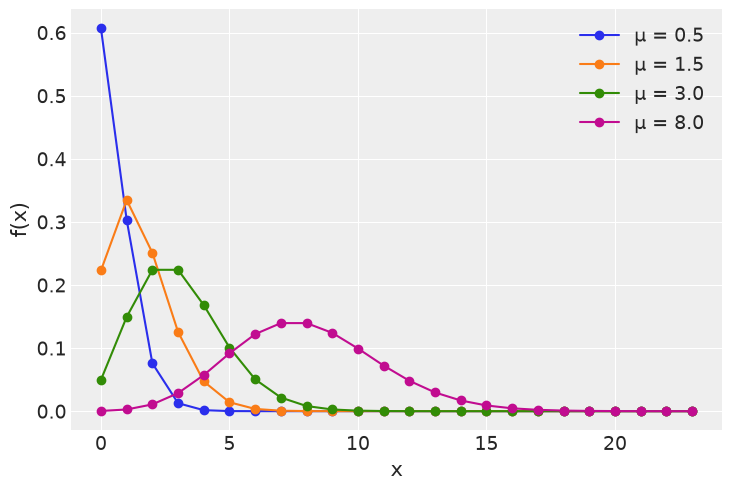
The Zero-Inflated Poisson model#
n = 100
θ_real = 2.5
ψ = 0.1
# Simulate some data
import numpy as onp
counts = onp.array([(onp.random.random() > (1-ψ)) *
onp.random.poisson(θ_real) for i in range(n)])
counts
array([2, 0, 4, 0, 0, 0, 4, 0, 0, 0, 0, 0, 0, 0, 0, 0, 0, 0, 0, 0, 0, 0,
0, 0, 0, 0, 0, 0, 0, 0, 0, 0, 0, 2, 0, 0, 4, 0, 0, 0, 0, 3, 0, 0,
0, 0, 0, 0, 0, 0, 0, 0, 0, 0, 0, 0, 0, 0, 0, 0, 0, 2, 0, 0, 0, 0,
0, 0, 0, 0, 0, 0, 0, 0, 0, 0, 0, 0, 2, 1, 0, 0, 0, 0, 0, 0, 0, 0,
0, 0, 0, 0, 0, 0, 0, 0, 0, 3, 0, 0])
random.split(key=random.PRNGKey(1), num=1)
Array([[ 507451445, 1853169794]], dtype=uint32)
print(dist.Uniform().sample(key=random.PRNGKey(1)) > (1-ψ))
print(dist.Uniform().sample(key=random.PRNGKey(1)))
False
0.4386325
print(random.uniform(key=random.PRNGKey(n)) > (1-ψ))
print(dist.Uniform().sample(key=random.PRNGKey(1)))
False
0.4386325
n = 100
θ_real = 2.5
ψ = 0.1
# Simulate some data
counts = jnp.array([(random.uniform(key=random.PRNGKey(i)) > (1-ψ)) * dist.Poisson(θ_real).sample(key=random.PRNGKey(i)) for i in range(n)])
counts
Array([0, 0, 0, 0, 0, 0, 0, 0, 0, 0, 0, 0, 0, 4, 0, 0, 2, 0, 0, 0, 0, 0,
0, 0, 0, 0, 0, 0, 0, 0, 0, 3, 4, 0, 0, 0, 0, 0, 0, 0, 0, 5, 0, 0,
0, 0, 0, 0, 0, 0, 0, 0, 0, 0, 0, 0, 0, 0, 0, 3, 0, 0, 0, 0, 0, 1,
0, 0, 0, 2, 0, 0, 0, 0, 0, 0, 0, 0, 0, 0, 0, 0, 0, 0, 0, 0, 0, 0,
3, 0, 0, 0, 0, 0, 0, 0, 0, 0, 0, 1], dtype=int32)
def model(obs=None):
ψ = numpyro.sample('ψ', dist.Beta(concentration1=1, concentration0=1))
θ = numpyro.sample('θ', dist.Gamma(concentration=2, rate=0.1))
y = numpyro.sample('y', dist.ZeroInflatedPoisson(gate=ψ, rate=θ), obs=obs)
kernel = NUTS(model)
mcmc7 = MCMC(kernel, num_warmup=500, num_samples=500, num_chains=2, chain_method='sequential')
mcmc7.run(random.PRNGKey(seed), obs=counts)
az.plot_trace(mcmc7, compact=False)
array([[<Axes: title={'center': 'θ'}>, <Axes: title={'center': 'θ'}>],
[<Axes: title={'center': 'ψ'}>, <Axes: title={'center': 'ψ'}>]],
dtype=object)
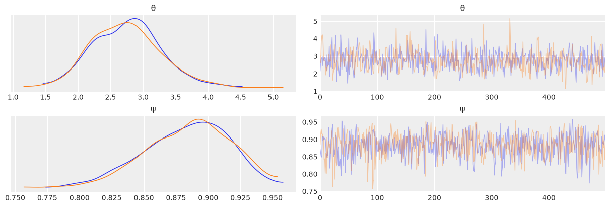
az.summary(mcmc7)
| mean | sd | hdi_3% | hdi_97% | mcse_mean | mcse_sd | ess_bulk | ess_tail | r_hat | |
|---|---|---|---|---|---|---|---|---|---|
| θ | 2.754 | 0.542 | 1.768 | 3.779 | 0.020 | 0.017 | 751.0 | 736.0 | 1.0 |
| ψ | 0.883 | 0.034 | 0.823 | 0.943 | 0.001 | 0.001 | 810.0 | 634.0 | 1.0 |
Poisson regression and ZIP regression#
fish_data = pd.read_csv('../data/fish.csv')
def model(obs=None):
ψ = numpyro.sample('ψ', dist.Beta(concentration1=1, concentration0=1))
α = numpyro.sample('α', dist.Normal(loc=0, scale=10))
β = numpyro.sample('β', dist.Normal(loc=0, scale=10), sample_shape=(2,))
θ = jnp.exp(α + β[0] * jnp.asarray(fish_data['child']) + β[1] * jnp.asarray(fish_data['camper']))
yl = numpyro.sample('yl', dist.ZeroInflatedPoisson(gate=ψ, rate=θ), obs=obs)
kernel = NUTS(model)
mcmc8 = MCMC(kernel, num_warmup=500, num_samples=500, num_chains=2, chain_method='sequential')
mcmc8.run(random.PRNGKey(seed), obs=jnp.asarray(fish_data['count']))
az.plot_trace(mcmc8, compact=False, combined=False);
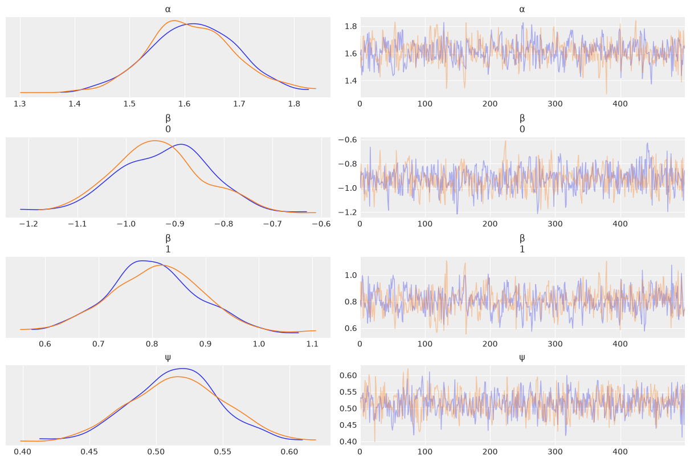
az.summary(mcmc8)
| mean | sd | hdi_3% | hdi_97% | mcse_mean | mcse_sd | ess_bulk | ess_tail | r_hat | |
|---|---|---|---|---|---|---|---|---|---|
| α | 1.613 | 0.081 | 1.468 | 1.773 | 0.003 | 0.003 | 546.0 | 607.0 | 1.0 |
| β[0] | -0.928 | 0.097 | -1.107 | -0.751 | 0.004 | 0.004 | 629.0 | 360.0 | 1.0 |
| β[1] | 0.805 | 0.089 | 0.636 | 0.970 | 0.004 | 0.003 | 581.0 | 512.0 | 1.0 |
| ψ | 0.515 | 0.034 | 0.457 | 0.584 | 0.001 | 0.001 | 666.0 | 499.0 | 1.0 |
children = [0, 1, 2, 3, 4]
fish_count_pred_0 = []
fish_count_pred_1 = []
for n in children:
without_camper = mcmc8.get_samples()['α'] + mcmc8.get_samples()['β'][:,0] * n
with_camper = without_camper + mcmc8.get_samples()['β'][:,1]
fish_count_pred_0.append(jnp.exp(without_camper))
fish_count_pred_1.append(jnp.exp(with_camper))
plt.plot(children, fish_count_pred_0, 'C0.', alpha=0.01)
plt.plot(children, fish_count_pred_1, 'C1.', alpha=0.01)
plt.xticks(children);
plt.xlabel('Number of children')
plt.ylabel('Fish caught')
plt.plot([], 'C0o', label='without camper')
plt.plot([], 'C1o', label='with camper')
plt.legend()
<matplotlib.legend.Legend at 0x7f473fbf2710>
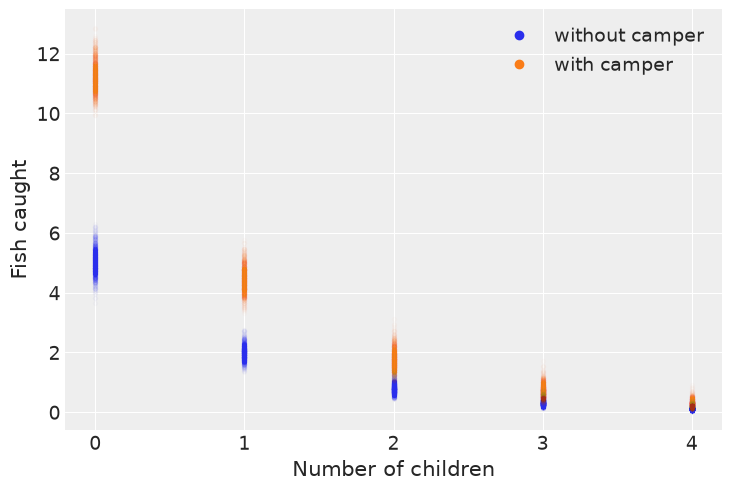
Robust logistic regression#
iris = sns.load_dataset("iris")
df = iris.query("species == ('setosa', 'versicolor')")
y_0 = pd.Categorical(df['species']).codes
x_n = 'sepal_length'
x_0 = df[x_n].values
y_0 = jnp.concatenate((y_0, jnp.ones(6, dtype=int)))
x_0 = jnp.concatenate((x_0, jnp.array([4.2, 4.5, 4.0, 4.3, 4.2, 4.4])))
x_c = x_0 - x_0.mean()
plt.plot(x_c, y_0, 'o', color='k');
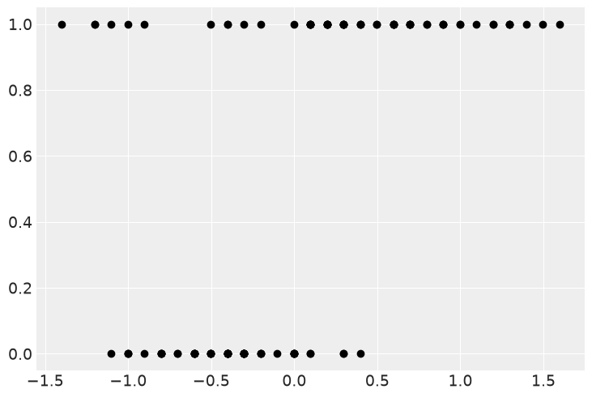
def model(obs=None):
α = numpyro.sample('α', dist.Normal(loc=0, scale=10))
β = numpyro.sample('β', dist.Normal(loc=0, scale=10))
μ = α + x_c * β
θ = numpyro.deterministic('θ', jnn.sigmoid(μ))
bd = numpyro.deterministic('bd', -α/β)
π = numpyro.sample('π', dist.Beta(concentration1=1., concentration0=1.))
p = π * 0.5 + (1 - π) * θ
yl = numpyro.sample('yl', dist.Bernoulli(probs=p), obs=obs)
kernel = NUTS(model)
mcmc9 = MCMC(kernel, num_warmup=500, num_samples=500, num_chains=2, chain_method='sequential')
mcmc9.run(random.PRNGKey(seed), obs=y_0)
az.plot_trace(mcmc9, varnames, compact=False, combined=False);
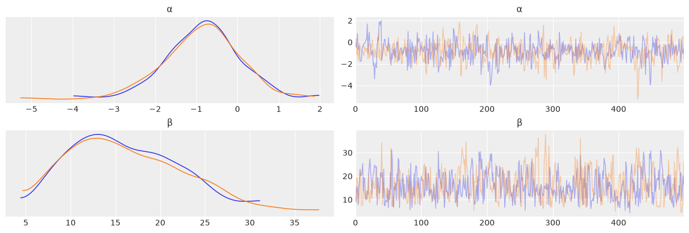
varnames = ['α', 'β', 'bd']
az.summary(mcmc9, varnames)
| mean | sd | hdi_3% | hdi_97% | mcse_mean | mcse_sd | ess_bulk | ess_tail | r_hat | |
|---|---|---|---|---|---|---|---|---|---|
| α | -0.849 | 0.923 | -2.709 | 0.699 | 0.042 | 0.039 | 512.0 | 513.0 | 1.00 |
| β | 16.201 | 6.156 | 6.393 | 27.017 | 0.305 | 0.256 | 440.0 | 404.0 | 1.01 |
| bd | 0.050 | 0.055 | -0.053 | 0.159 | 0.002 | 0.002 | 660.0 | 625.0 | 1.00 |
import numpy as np
theta = mcmc9.get_samples()['θ'].mean(axis=0)
idx = jnp.argsort(x_c)
plt.plot(x_c[idx], theta[idx], color='C2', lw=3);
plt.vlines(mcmc9.get_samples()['bd'].mean(), 0, 1, color='k')
bd_hdi = az.hdi(mcmc9.get_samples()['bd'].copy())['x'].values
plt.fill_betweenx([0, 1], bd_hdi[0], bd_hdi[1], color='k', alpha=0.5)
plt.scatter(x_c, dist.Normal(y_0, 0.02).sample(random.PRNGKey(1)), marker='.', color=[f'C{x}' for x in y_0])
theta_hdi = az.hdi(np.array(mcmc9.get_samples()['θ']))[idx]
plt.fill_between(x_c[idx], theta_hdi[:,0], theta_hdi[:,1], color='C2', alpha=0.5)
plt.xlabel(x_n)
plt.ylabel('θ', rotation=0)
# use original scale for xticks
locs, _ = plt.xticks()
plt.xticks(locs, jnp.round(locs + x_0.mean(), 1))
FutureWarning: hdi currently interprets 2d data as (draw, shape) but this will change in a future release to (chain, draw) for coherence with other functions
([<matplotlib.axis.XTick at 0x7f473e5b42d0>,
<matplotlib.axis.XTick at 0x7f473e5b6d50>,
<matplotlib.axis.XTick at 0x7f473e5b7390>,
<matplotlib.axis.XTick at 0x7f473e5b7b10>,
<matplotlib.axis.XTick at 0x7f473e64c2d0>,
<matplotlib.axis.XTick at 0x7f473e64ca50>,
<matplotlib.axis.XTick at 0x7f473e64d1d0>,
<matplotlib.axis.XTick at 0x7f473e64d950>,
<matplotlib.axis.XTick at 0x7f473e64e0d0>],
[Text(-2.0, 0, '3.4'),
Text(-1.5, 0, '3.9'),
Text(-1.0, 0, '4.4'),
Text(-0.5, 0, '4.9'),
Text(0.0, 0, '5.4'),
Text(0.5, 0, '5.9'),
Text(1.0, 0, '6.4'),
Text(1.5, 0, '6.9'),
Text(2.0, 0, '7.4')])
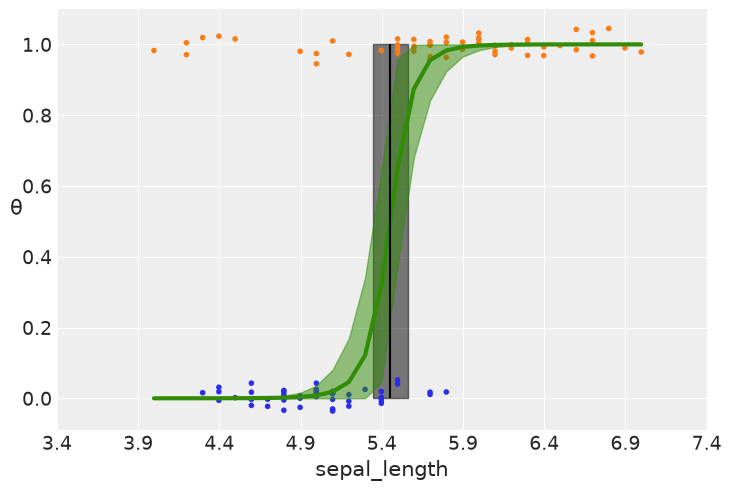